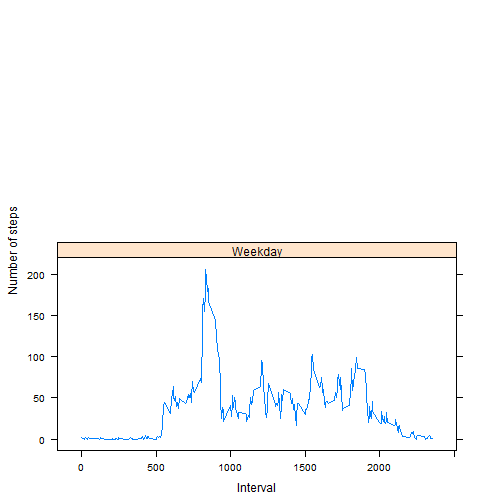

###Loading and preprocessing the data.
# unzip file
if (!file.exists("Amd.zip")) {
download.file(url="https://d396qusza40orc.cloudfront.net/repdata%2Fdata%2Factivity.zip",
destfile="Amd.zip")
unzip("Amd.zip")
}
# read csv-file
data <- read.csv("activity.csv", sep=",", stringsAsFactors=FALSE)
str(data)
## 'data.frame': 17568 obs. of 3 variables:
## $ steps : int NA NA NA NA NA NA NA NA NA NA ...
## $ date : chr "2012-10-01" "2012-10-01" "2012-10-01" "2012-10-01" ...
## $ interval: int 0 5 10 15 20 25 30 35 40 45 ...
# sum values by date
sum<-lapply(split(data$steps, data$date), sum)
sum2<-as.table(as.numeric(sum))
rownames(sum2)<-unique(data$date)
###What is mean total number of steps taken per day?
# construct the histogram
hist(sum2, main = "Total Steps per Day", xlab="Total steps", col="darkorchid")
sum2<-as.numeric(sum2)
# Calculate mean value
mean(sum2, na.rm=TRUE)
## [1] 10766.19
# Calculate median value
median(sum2, na.rm=TRUE)
## [1] 10765
###What is the average daily activity pattern?
# aggregate steps as interval to get average number of steps in an interval across all days
interval_steps <- aggregate(steps ~ interval, data, mean)
# generate the line plot of the 5-minute interval (x-axis) and the average number of
# steps taken, averaged across all days (y-axis)
plot(interval_steps, type='l', main="Average number of steps averaged over all days", xlab="Interval", ylab="Average number of steps", col="darkred")

maxInterval<-subset(interval_steps$interval, interval_steps$steps==max(interval_steps$steps))
print(maxInterval)
## [1] 835
###Imputing missing values
sum(is.na(data$steps))
## [1] 2304
#Na replaced by mean in 5 min interval
filling <- numeric()
for (i in 1:nrow(data)) {
calc <- data[i, ]
if (is.na(calc$steps)) {
steps <- subset(interval_steps, interval == calc$interval)$steps
} else {
steps <- calc$steps
}
filling <- c(filling, steps)
}
3.Create a new dataset that is equal to the original dataset but with the missing data filled in.
#Create a new dataset
new_data<-data
new_data$steps<-filling
#check
colSums(is.na(new_data))
## steps date interval
## 0 0 0
total_day<-tapply(new_data$steps, new_data$date, sum)
# construct the histogram
hist(total_day, main = "Total Steps per Day", xlab="Total steps", col="darkorchid")

sum<-as.numeric(total_day)
# Calculate mean value
mean(sum)
## [1] 10766.19
# Calculate median value
median(sum)
## [1] 10766.19
After replacing the mean is the same but the median is a little bit different
###Are there differences in activity patterns between weekdays and weekends?
data<-new_data
day <- weekdays(as.Date(data$date))
daytype <- vector()
for (i in 1:nrow(data)) {
if (day[i] == "ñóáîòà") {
daytype[i] <- "Weekend"
} else if (day[i] == "íåä³ëÿ") {
daytype[i] <- "Weekend"
} else {
daytype[i] <- "Weekday"
}
}
data$daytype <- daytype
data$daytype <- factor(data$daytype)
library(lattice)
stepsByDay <- aggregate(steps ~ interval + daytype, data = data, mean)
names(stepsByDay) <- c("interval", "daytype", "steps")
xyplot(steps ~ interval | daytype, stepsByDay, type = "l", layout = c(1, 2),
xlab = "Interval", ylab = "Number of steps")
